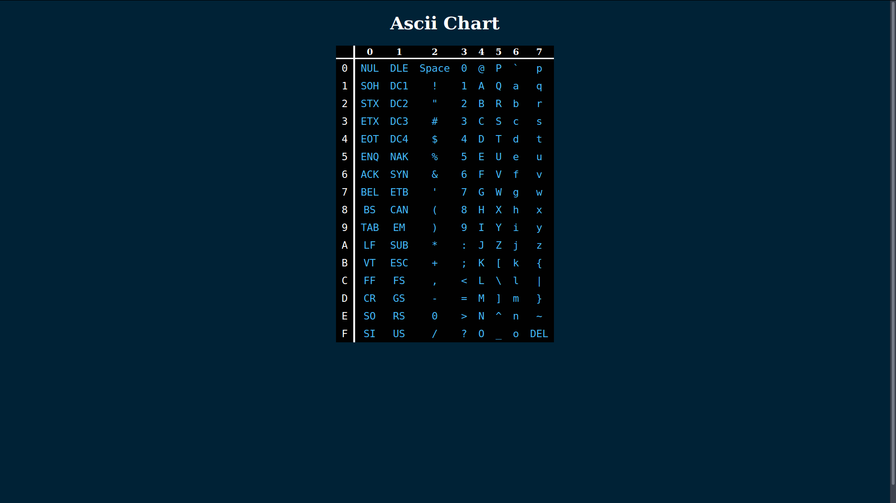

Raymond's Tools
Quick Links
Tools
References
Tools
Markdown Editor
Basic markdown editor/viewer. Markdown goes in the area on the left and the document is displayed on the left automatically.
Shade Finder
Finds darker and lighter shades of a given color. The shades option specifies the number of shades darker and lighter than the given color to find. (e.g. 5 would produce 5 darker shades and 5 lighter shades.)The original color is shown in bold.
Table Generator
Generates tables for common formats from data and given delimiters. Supports file upload. Currently supported formats are: CSV, HTML, and LaTeX.
Line Break Remover
Remove line breaks from text. Supports file upload and download. Good for fixing text copied from a pdf.
References
GDB Quick Reference
GDB cheatsheet in PDf format. Includes commands for executing programs, setting break/watch points, and displaying certain information.
x86 Calling Conventions
x86 calling convention references. Covers both 32 and 64 bit calling conventions, as well as system and user level conventions.
ASCII Chart
Hexidecimal ASCII chart.
Vim Regex Reference
A regular expression reference primarily for the vim text editor.